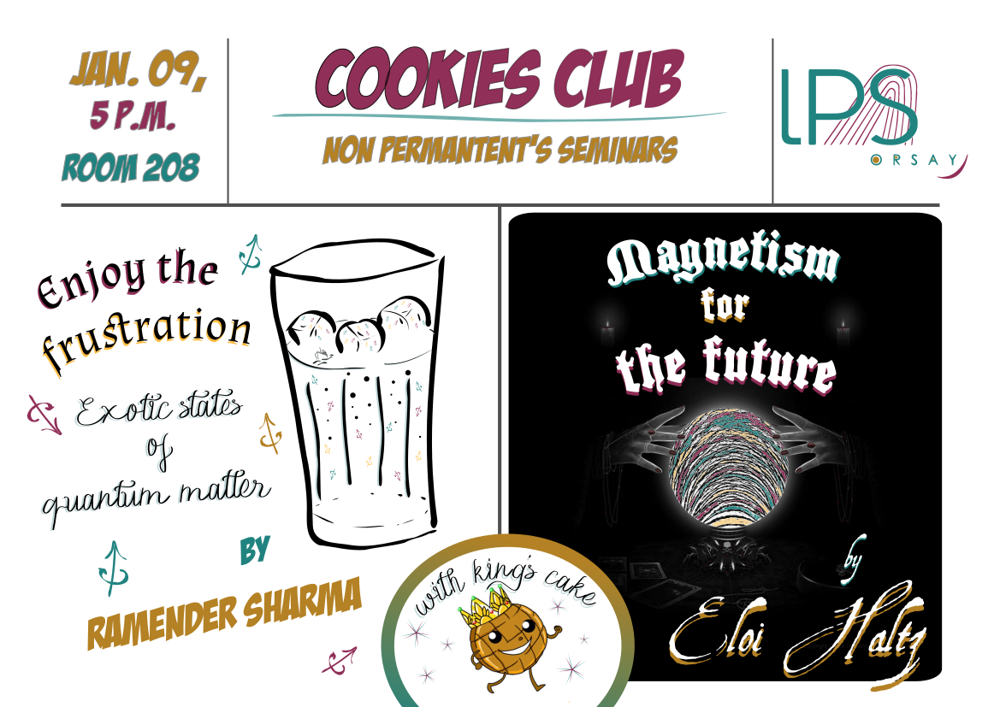
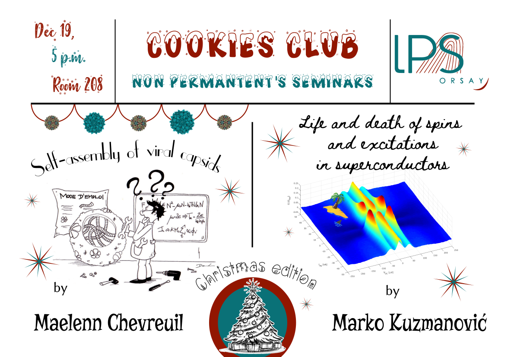
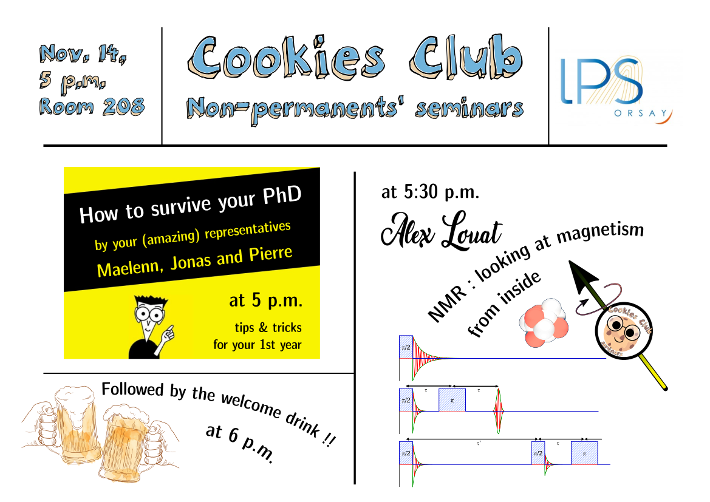
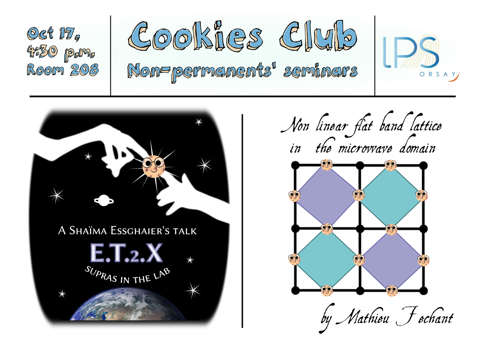
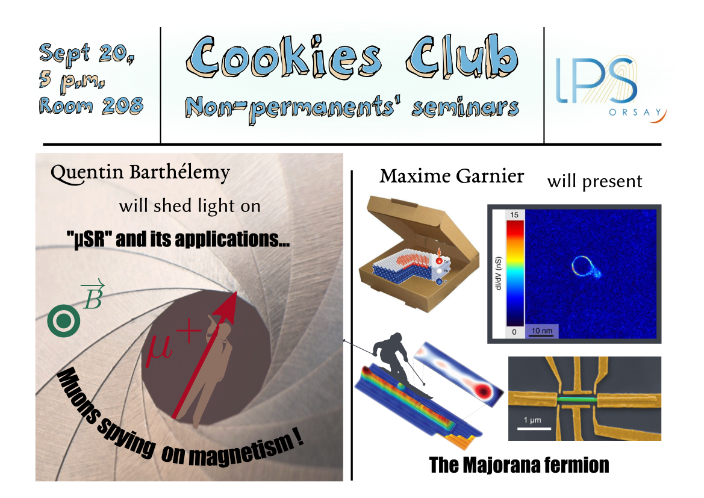
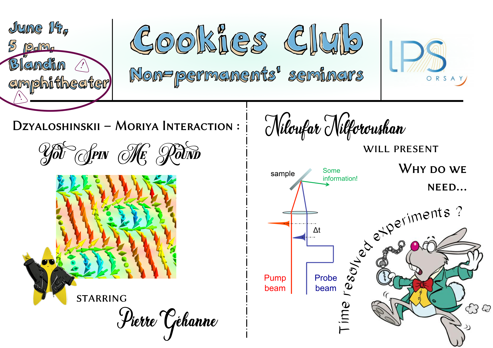
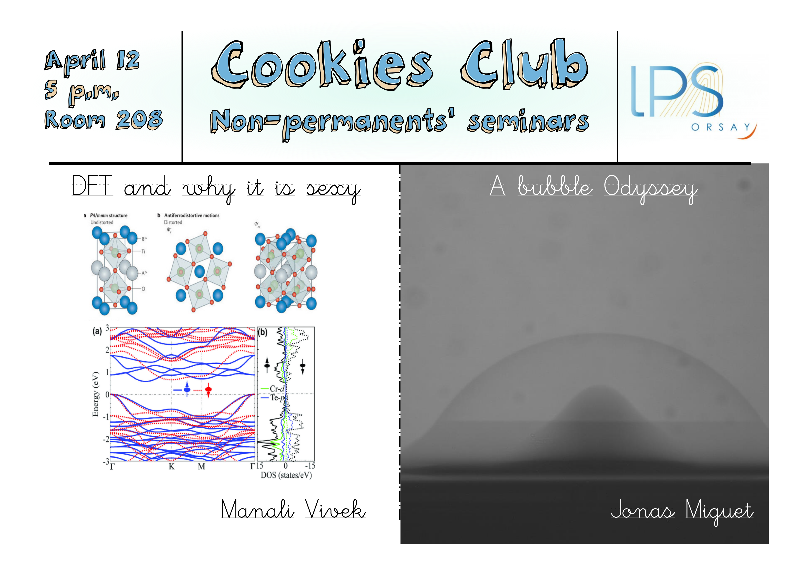

About the Cookies Club: principles & team
The club meets once a month, on a Wednesday at 5pm (most of the time in the room 208). All non-permanent people from LPS and surrounding labs are welcome. At each session, two people volunteer to give a talk. Their presentations last around 15-20 minutes and are followed by as much questions as needed. Speakers can obviously decide to talk about their research subject, but this could also be about interesting techniques, articles, or scientific concerns they could have. The club is currently managed by Manon Marchand (2nd year PhD student, team MMOI), Chaima Essghaier (3rd year PhD student, team HP), Eloi Haltz (3rd year PhD student, team IDMAG) and Quentin Barthélemy (2nd year PhD student, team SQM).
Notes to speakers:
- The language of the club is English, so that everyone can come.
- Try to be as didactic as possible: we strongly recommend spending the first few minutes of the presentation making a general introduction that will put everyone on the same level before focussing on results and interpretations. A good way to organize the presentation is to formulate a problem and answer it.
- Every member of the club should ideally speak twice during the duration of their PhD/Post-Doc. So don't hesitate to register, it will be a good training for your next oral interventions in front of assemblies much more intimidating than a few hungry students.
Schedule
This is the current version of the schedule. To register, you can edit the table here or simply send an email to cookies_club.lps@u-psud.fr specifying your name, subject and the day that suits you.
Archive
Here you will find some of the presentations that have been given at the club.
Cookies 9 (February 13, 2019):
Gediminas Simutis - Marion Grzelka
Cookies 8 (January 9, 2019):

Ramender Sharma - Eloi Haltz
Cookies 7 (December 19, 2018):

Maelenn Chevreuil - Marko Kuzmanović
Cookies 6 (November 14, 2018):

PhD representatives (Maelenn, Jonas & Pierre) - Alex Louat
Cookies 5 (October 17, 2018):

Chaima Essghaier - Mathieu Fechant
Cookies 4 (September 20, 2018):

Quentin Barthélemy - Maxime Garnier
Cookies 3 (June 14, 2018):

Pierre Géhanne - Niloufar Nilforoushan
Cookies 2 (May 17, 2018):

Laura Sabatier - Manon Marchand
Cookies 1 (April 12, 2018):

Manali Vivek - Jonas Miguet